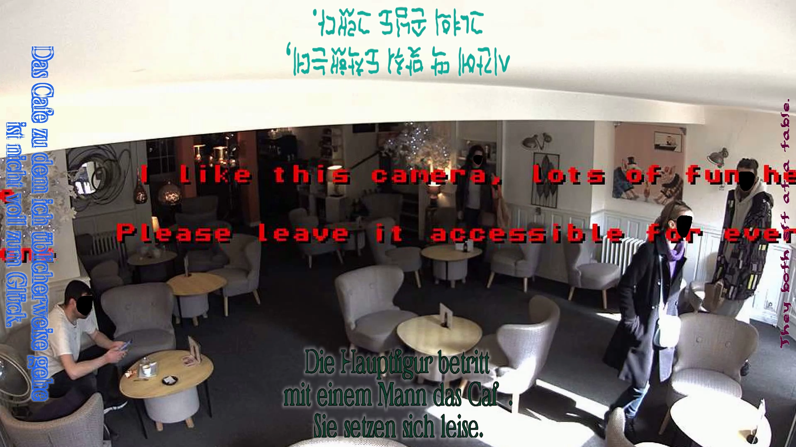
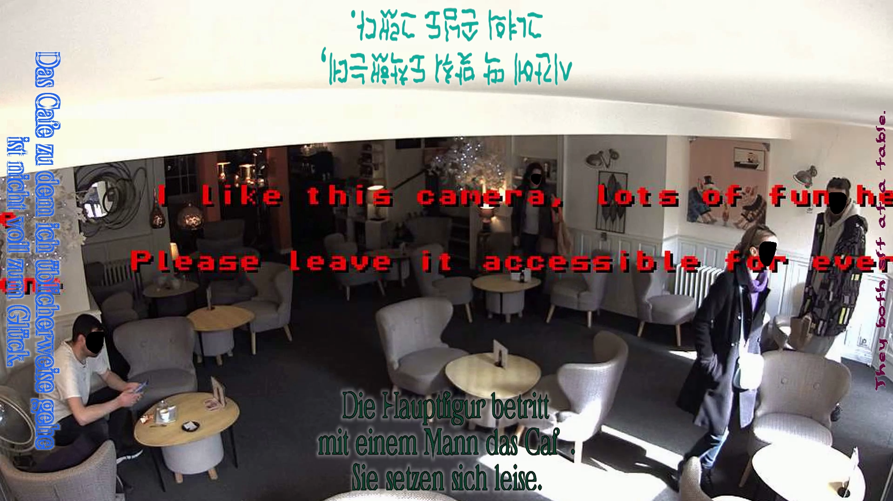
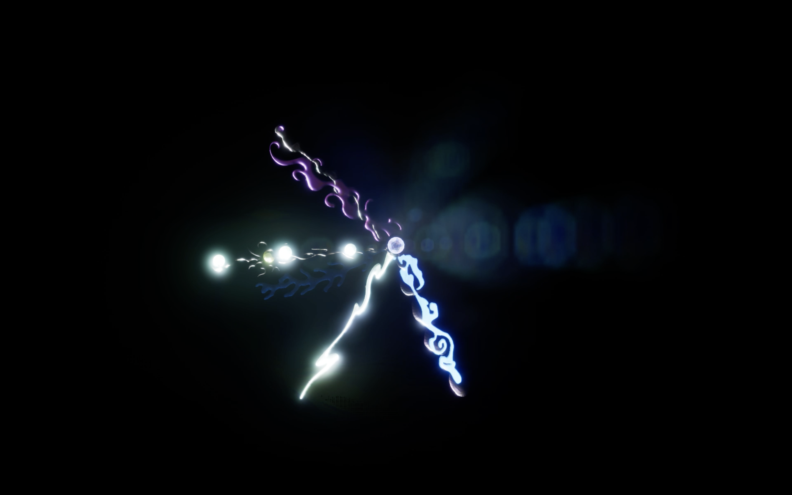
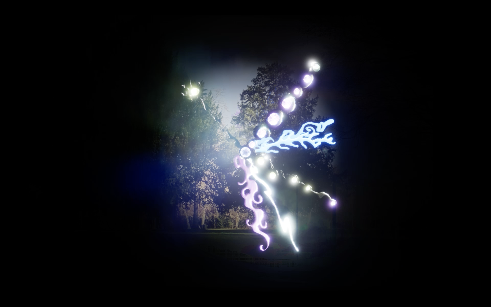
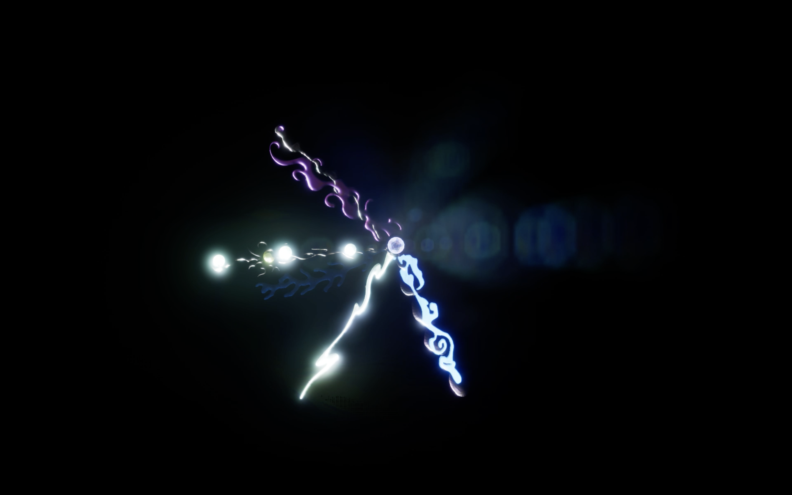
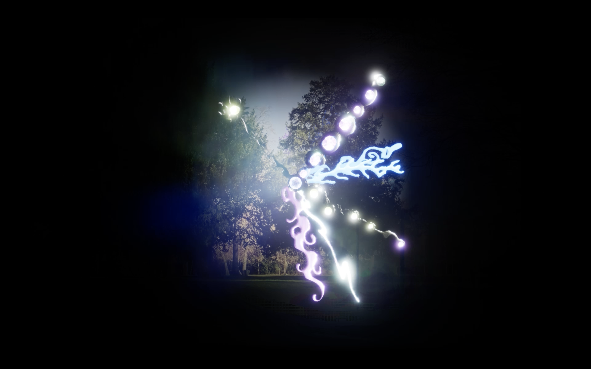

Unsecured Narratives
 


description
Unsecured Narratives begins with the question: “Why do we feel anxiety in the digital age?” We live with the constant presence of surveillance, exposure of information, and unstable identities. Even without a concrete threat, there is a persistent sense of being watched and of our private lives leaking somewhere we cannot see. This anxiety is not only personal, but a structural experience produced by digital society.
The work uses publicly accessible CCTV streams (insecam) as its raw material. With Contacam software, only the moments with detected motion are automatically recorded and collected into a database, spanning different locations and times. From this footage, people are re-grouped by similar appearance and atmosphere, and the two largest clusters—“old white man” and “blonde woman”—are chosen to build two separate videos, each with a single seeming protagonist.
In reality, each “protagonist” is composed of many different individuals. They live in different cities and appear at different times, but through repetition of similar clothing, gestures and camera angles, the editing makes them look like one continuous person going through an ordinary day. What the viewer encounters is not a documentary portrait, but a composite fake identity assembled from fragments of other people’s lives, showing how easily images and information can be recombined and misread in digital environments.
Each of the two videos has four narrative versions: Korean, English, German, and an AI-generated one. The human-written texts were created by native speakers who freely wrote their own stories after watching the footage, while the AI version comes from a non-human, algorithmic voice. The same material thus produces very different emotions and interpretations, and the AI narrative introduces a third perspective that resembles human language yet deviates from it in subtle ways.
Subtitles and voiceovers appear at random positions on the four sides of the screen (top, bottom, left, right). Colors, typography and effects shift with each playback, and the audio is split into four channels mapped to the subtitle positions in space. Each viewing becomes a different mix of languages, layouts and sound fields. For many viewers, their native language stands out clearly, while the others sink into background noise—revealing how even “shared” information is always filtered through position, familiarity and bias.
When no one stands in front of the screen, all faces in the footage are blacked out and no identities are visible. As soon as a viewer approaches and their face is detected, every face in the video is replaced with theirs. The people they were watching suddenly become versions of themselves, and the viewer shifts from observer to observed. This real-time flip in visibility points to how fragile the boundaries of image ownership, identity and gaze have become in networked systems.
Unsecured Narratives asks how, in an age of overflowing data, the borders between reality and fiction, meaning and noise, truth and manipulation are eroding. It invites viewers to confront questions such as: “How real is what I see and believe?” and “Are my identity and my data truly mine?”
설명
Unsecured Narratives는 “디지털 시대에 우리는 왜 불안을 느끼는가?”라는 질문에서 출발한 작업이다. 오늘날 우리는 감시와 정보 노출, 정체성의 불안정 속에서 살아가며, 구체적인 피해가 없어도 누군가 나를 보고 있을지 모른다는 감각, 사생활이 어딘가에서 흘러가고 있을 것 같은 막연한 불안을 일상적으로 경험한다. 이러한 불안은 개인적 감정을 넘어 디지털 사회가 만들어낸 구조적이고 집단적인 경험이다.
작업은 전 세계에서 실시간으로 송출되는 공개 CCTV 스트림(insecam.org)을 기반으로 한다. 다양한 장소와 시간대에서 수집한 영상을 하나의 데이터베이스로 구축한 뒤, 화면 속 인물들을 외형적 특징과 옷차림에 따라 재분류했다. 이후 가장 많은 영상이 모인 두 정체성—‘old white man’과 ‘blonde woman’—을 선택해, 각각 하나의 주인공을 가진 두 개의 독립된 영상으로 구성했다.
각 영상 속 ‘주인공’은 실제로는 여러 명의 서로 다른 사람들이다. 서로 다른 도시와 시간대의 전혀 다른 개인들이지만, 이들의 순간들이 이어 붙여지며 마치 한 사람이 하루를 살아가는 것처럼 보이도록 구성되었다. 실제 인물은 존재하지 않지만, 영상 속에서는 실재처럼 보이는 합성된 정체성(fake identity)이 만들어지며, 이는 디지털 환경에서 이미지와 정보가 얼마나 쉽게 재조합되고 오해될 수 있는지를 드러낸다.
두 영상에는 한국어, 영어, 독일어, 그리고 AI가 생성한 텍스트까지 총 네 가지 내러티브가 존재한다. 한국어·영어·독일어 버전은 각 언어를 모국어로 사용하는 참여자들에게 영상을 보여주고, 그들이 느낀 인상과 해석을 바탕으로 서사를 작성하도록 하여 제작되었다. AI 버전은 동일한 영상을 비인간적 관점에서 ‘읽어내도록’ 한 결과물로, 인간의 언어 구조를 닮았으면서도 다른 방식으로 이야기를 구성한다.
이 내러티브들은 매번 영상이 재생될 때마다 화면의 네 방향(상·하·좌·우)에 무작위로 나타나고, 폰트·색상·효과 또한 지속적으로 변한다. 오디오는 자막 위치에 따라 네 방향으로 분리되어 재생되며, 관객은 매번 다른 언어적·시각적·공간적 조합을 마주하게 된다. 자신의 언어는 명확히 들리지만 나머지 언어는 배경음처럼 들리는 경험은, 동일한 정보도 각자의 위치·배경·관심에 따라 편파적으로 해석됨을 보여준다.
또한 화면 앞에 관객이 서지 않을 때는 영상 속 모든 얼굴이 블랙아웃되어 신원이 숨겨진다. 하지만 누군가 다가와 얼굴이 인식되는 순간, 영상 속 모든 얼굴은 즉시 그 관람객의 얼굴로 치환된다. 타인을 바라보던 장면이 곧바로 자신의 얼굴로 대체되며, 관객은 한순간에 ‘관찰자’에서 ‘관찰되는 존재’로 전환된다. 이 기술적 구조는 감시와 노출의 권력이 실시간으로 뒤집히는 경험을 만들어내며, 이미지의 소유, 시선의 주체, 정체성의 경계가 얼마나 쉽게 흔들릴 수 있는지를 드러낸다.
Unsecured Narratives는 정보가 과잉된 시대에 실제와 허구, 의미와 진실의 경계가 얼마나 불안정해지는지를 질문한다. 작품은 관객이 스스로에게 묻도록 유도한다. “내가 보고 믿는 정보는 어디까지 진짜인가?” “나의 정체성과 나의 데이터는 정말 ‘내 것’일 수 있는가?”


 


